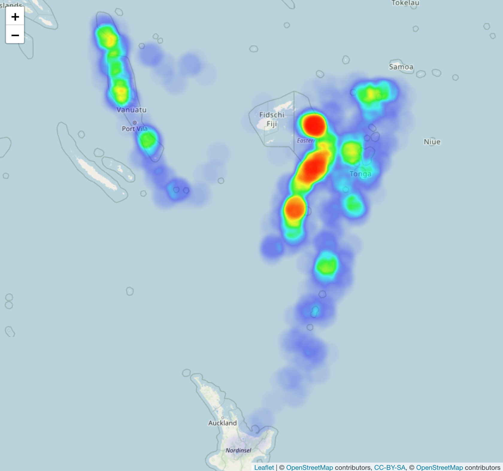

12.1 地图
library(echarts4r)
quakes %>%
e_charts(long) %>%
e_geo(
roam = TRUE,
boundingCoords = list(
c(185, - 10),
c(165, -40)
)
) %>%
e_scatter(
lat, mag,
coord_system = "geo"
) %>%
e_visual_map(mag, scale = e_scale)leaflet 包制作地图，斐济是太平洋上的一个岛国，处于板块交界处，经常发生地震，如图 12.1 所示，展示 1964 年来 1000 次震级大于 4 级的地震活动。
library(leaflet)
data(quakes)
# Pop 提示
quakes$popup_text <- lapply(paste(
"编号:", "<strong>", quakes$stations, "</strong>", "<br>",
"震深:", quakes$depth, "<br>",
"震级:", quakes$mag
), htmltools::HTML)
# 构造调色板
pal <- colorBin("Spectral", bins = pretty(quakes$mag), reverse = TRUE)
p <- leaflet(quakes) %>%
addProviderTiles(providers$CartoDB.Positron) %>%
addCircles(lng = ~long, lat = ~lat, color = ~ pal(mag), label = ~popup_text) %>%
addLegend("bottomright",
pal = pal, values = ~mag,
title = "地震震级"
) %>%
addScaleBar(position = c("bottomleft"))
p
图 12.1: 斐济地震带
将上面的绘图部分保存为独立的 HTML 网页文件
library(htmlwidgets)
# p 就是绘图部分的数据对象
saveWidget(p, "fiji-map.html", selfcontained = T)library(leaflet)
library(leaflet.extras)
library(magrittr)
quakes %>%
leaflet() %>%
addTiles() %>%
addProviderTiles(providers$OpenStreetMap.DE) %>%
addHeatmap(lng = ~long, lat = ~lat, intensity = ~mag,
max = 100, radius = 20, blur = 10)

图 12.2: 斐济地震带热力图
# 地图默认放大倍数
zoom <- 4
# 地图可以放大的倍数区间
minZoom <- 1
maxZoom <- 18
library(leaflet)
library(leafletCN)
library(maptools)
library(leaflet.extras)
# 热力图 heatmap
leaflet(res, options = leafletOptions(minZoom = minZoom, maxZoom = maxZoom)) %>%
amap() %>%
#setView(lng = mean(data$long), lat = mean(data$lat), zoom = zoom) %>%
setView(lng = 109, lat = 38, zoom = 4) %>%
addHeatmap(lng = ~long2, lat = ~lat2, intensity = ~uv, max = max(res$uv),
blur = blur, minOpacity = minOpacity, radius = radius)
quakes$popup_text <- lapply(paste(
"编号:", "<strong>", quakes$stations, "</strong>", "<br>",
"震深:", quakes$depth, "<br>",
"震级:", quakes$mag
), htmltools::HTML)
# 构造调色板
pal <- colorBin("Spectral", bins = pretty(quakes$mag), reverse = TRUE)
leaflet(quakes) %>%
addProviderTiles(providers$CartoDB.Positron) %>%
addCircles(lng = ~long, lat = ~lat, color = ~ pal(mag), label = ~popup_text) %>%
setView(178, -20, 5) %>%
addHeatmap(
lng = ~long, lat = ~lat, intensity = ~mag,
blur = 20, max = 0.05, radius = 15
) %>%
addLegend("bottomright",
pal = pal, values = ~mag,
title = "地震震级"
) %>%
addScaleBar(position = c("bottomleft"))